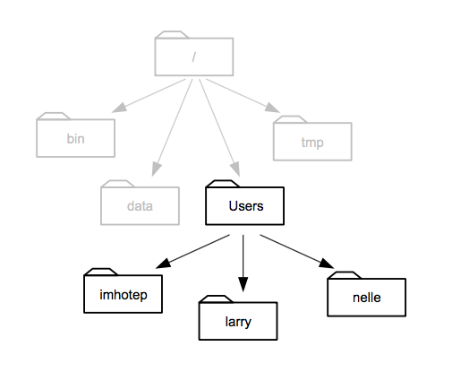

9 Loading your own data
- Questions:
- How do I use my data?
- Objectives:
- Preparing a csv file in ‘tidy’ format
- Understanding file system paths
- Loading a file to a dataframe
- Explicitly describing the file contents
- Keypoints:
- Data needs to be in a particular format for
ggplotto work - Specifying the data type is sometimes necessary when creating a data frame.
9.1 Tidy data
There are many ways to structure data. Here are two quite common ones.
| treatmenta | treatmentb | |
|---|---|---|
| John Smith | 11 | 2 |
| Jane Doe | 16 | 11 |
| Mary Johnson | 3 | 1 |
| John Smith | Jane Doe | Mary Johnson | |
|---|---|---|---|
| treatementa | 11 | 16 | 3 |
| treatementb | 2 | 11 | 1 |
source: Hadley Wickham
Tables contain two things, variables and values for those variables. In these two tables there are only three variables. treatment is one, with the values a and b . The second is ‘name’, with three values hidden in plain sight, and the third is result which is the value of the thing actually measured for each person and treatment.
For human reading purposes, we don’t need to state the variables explicitly, we can see them by interpolating between the columns and rows and adding a bit of common sense. This mixing up of variables and values across tables like this has led some to call these tables ‘messy’. A computer finds it hard to make sense of a messy table.
Working with R is made much less difficult if we get the data into a ‘tidy’ format. This format is distinct because each variable has its own column explicitly, like this
| name | treatment | result |
|---|---|---|
| John Smith | a | 11 |
| Jane Doe | a | 16 |
| Mary Johnson | a | 3 |
| John Smith | b | 2 |
| Jane Doe | b | 11 |
| Mary Johnson | b | 1 |
Now each variable has a column, and each seperate observation of the data has its own row. It is much more verbose for a human, but R can use this easily because we are now explicit about what is called what and how it relates to everything else.
9.2 Getting your data into tidy format
The bad news here is that there is no magic function to make your data tidy. If you have an existing table then you can do this manually in Excel or some other spreadsheet package. If you have lots of data, it is possible to do it programmatically in R, see the dplyr and tidyr packages, which are complex but designed for this purpose. Also have a look at the cheat-sheet here https://www.rstudio.com/wp-content/uploads/2015/02/data-wrangling-cheatsheet.pdf.
9.3 Loading in a CSV file
R can deal with a lot of file formats, but the most common and easily used one is ‘csv’, a comma-separated value file. These can be exported from virtually any spreadsheet program so its a good interchange format to get data into R from wherever you already have it. Loading a file is done easily with the read.csv() function, just give it the file to be read.
my_data <- read.csv('my_data.csv')This will create an object called a dataframe that can be used just like the iris data.
9.4 Finding the file
R needs to be given the correct and full path to a file. This means the full address of the file on the hard disk of your computer. R doesn’t have a file chooser so you need to know how to write this down.
Computer file systems are laid out in folders and sub-folders with files inside them. Conceptually, this results in a tree of folders and a path down the branches from the root of the tree to everything else. The root gets called ‘/’ on Mac/Linux computers and ’C:' on Windows computers
 source: Software Carpentry
{kind=link}
This picture of an example file system shows how that is formed. When we write this down, everytime we go inside a new folder we use a slash to show we’ve changed folder. Most computer systems have a ‘Users’ or similar folder in which each users stuff is stored. Supposing we’re in Larry’s folder then the path would be /Users/larry. And a file called my_file.txt in that folder would be /Users/larry/my_file.txt.
So to write the full file path for R we can use this pattern, the first bit would be /Users/username/ (or C:\Documents and Settings\username\ or C:\Users\username\) and then the set of folders within that user area follows on. If your file my_file.txt is on the Desktop the full path would be /Users/username/Desktop/my_file.txt (or C:/Documents and Settings/username/Desktop/my_file.txt)
9.4.1 Make it easy on yourself
The easiest way not to have to think too hard about this stuff is to set up a consistent folder and file structure for every analysis and use RMarkdown documents to run your analysis. Here’s an example scheme:
- Create a new folder and call it something relevant to your experiment, e.g
disease_incidence_2016-11-01 - Within the folder create a sub-folder called
rawand a sub-folder calledoutput_images. - Put your tidy csv file in the
rawfolder. - Create a new R Markdown document and save it in the
disease_incidence_2016-11-01folder.
Now whenever you open and run that R Markdown document, the path of your input file is "raw/my_input_filename.csv". You can save your plots with the ggsave() function to "output_images/filename.png" (don’t forget the quotes).
If you never mess around with the relative positions of the files and folders described, then the paths will always be the same. You can move the whole folder without worrying, just don’t jumble it’s contents.
9.5 Making sure the data types are correct
When we load new data we need to make sure that any header has been properly parsed as column names, and that the columns have been identified as the right sort of data
Once the file is loaded, you need to ensure that the created dataframe is correct. We can examine a dataframe with the str() function.
str(iris)## 'data.frame': 150 obs. of 5 variables:
## $ Sepal.Length: num 5.1 4.9 4.7 4.6 5 5.4 4.6 5 4.4 4.9 ...
## $ Sepal.Width : num 3.5 3 3.2 3.1 3.6 3.9 3.4 3.4 2.9 3.1 ...
## $ Petal.Length: num 1.4 1.4 1.3 1.5 1.4 1.7 1.4 1.5 1.4 1.5 ...
## $ Petal.Width : num 0.2 0.2 0.2 0.2 0.2 0.4 0.3 0.2 0.2 0.1 ...
## $ Species : Factor w/ 3 levels "setosa","versicolor",..: 1 1 1 1 1 1 1 1 1 1 ...The output tells us that this dataframe has 150 observations of 5 variables (or columns) the column names come after the $ sign and the type of each column comes after that. So here the Length and Width columns are of type ‘num’ - which means numeric and the Species column is of type factor (and that factor has 3 different values)
If the header isn’t parsed properly we can force the first line in the file to be taken as the header with
data <- read.csv('my_data.csv', header=TRUE)If a column should be numeric but hasn’t been loaded that way, you can change it with
data$column_name <- as.numeric(data$column_name)and if a column should be a factor, but isn’t you can change it with
data$column_name <- as.factor(data$column_name)Once the output of str() shows what you expect, then you are good to start analysing.
9.6 Quiz
- Set up an analysis folder:
- Make a new folder called
analysison the Desktop - Inside
analysismake a new folder calledrawand putexample_ros_data_flg22.xlsxinto it. - Start a new R Markdown document and save it in
analysis
- Make a new folder called
- Convert
raw/example_ros_data_flg22.xlsxinto a ‘tidy’ format .csv file and save toraw - Load in the data from the tidy file using
read.csv()(Hint: You may need to save a csv version from Excel - R won’t read .xlsx files.) - Check the datatypes and headers using
str(), change them if necessary. - Create a plot that shows each data point in each treatment (Col, pp2c38, pp2c48 pp2c38/pp2c48) in each day the experiment was done.
- Make sure the plot you generate gets saved to a folder inside
analysiscalledoutput_images